CODING AGENTS AS PIXEL WORLD MODELS
traex/GPT-6.1-Sol · 0055
点击播放 · 原生 RGB 像素
逐轮保存的候选
回放视频、检查图与代码变化。
每份候选均可单独播放。实际图片检查记录在下方工具轨迹中。
候选 01播放与检查图
点击播放 · 原生 RGB 像素

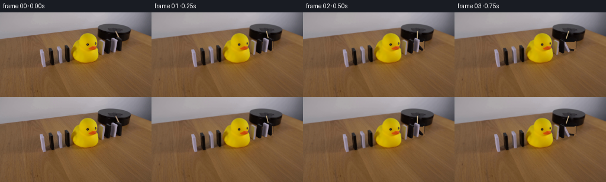
展开代码变化
--- 上一保存版本
+++ 本次保存版本
@@ -0,0 +1,192 @@
+from pathlib import Path
+import math
+import cv2
+import numpy as np
+from PIL import Image, ImageDraw, ImageFilter
+import artifact_io
+
+ROOT=Path(__file__).resolve().parent
+S=4
+W,H=256,144
+img=np.array(Image.open(ROOT/'first_frame.png').convert('RGB'))
+
+# Geometry measured from the photographic setup. Faces retain their original finish.
+# Ordered from the rubber duck to the rotating arm.
+def arr(x): return np.array(x,dtype=np.float32)
+blocks=[
+ dict(A=arr((167.6,47.8)), B=arr((173.7,50.9)), C=arr((172.8,71.8)), D=arr((166.7,69.6)), s=arr((2.0,-1.0)), white=True, height=25.2, stop=12.0, start=.88),
+ dict(A=arr((177.6,46.5)), B=arr((184.0,49.6)), C=arr((182.9,69.5)), D=arr((176.5,66.4)), s=arr((2.3,-1.0)), white=False, height=23.6, stop=33.0, start=.64),
+ dict(A=arr((188.4,44.7)), B=arr((195.6,47.8)), C=arr((193.2,67.5)), D=arr((186.0,64.4)), s=arr((2.0,-1.5)), white=True, height=25.0, stop=49.8, start=.43),
+ dict(A=arr((196.5,43.9)), B=arr((202.0,46.6)), C=arr((201.3,65.2)), D=arr((195.8,62.5)), s=arr((2.3,-1.2)), white=False, height=23.0, stop=64.0, start=.20),
+]
+for b in blocks:
+ A,B,C,D,s=[b[k] for k in ['A','B','C','D','s']]
+ b['faces']=[arr([A,B,C,D]),arr([B,B+s,C+s,C]),arr([A,A+s,B+s,B])]
+
+# Remove only the parts that will move; synthesize the newly exposed wood from
+# a nearby part of the same table, with its grain running in the same direction.
+mask=np.zeros((H*S,W*S),np.uint8)
+for b in blocks:
+ for p in b['faces']:
+ cv2.fillConvexPoly(mask,np.round(p*S).astype(np.int32),255)
+mask=cv2.dilate(mask,cv2.getStructuringElement(cv2.MORPH_ELLIPSE,(9,9)))
+lowmask=cv2.resize(mask,(W,H),interpolation=cv2.INTER_AREA)
+# Remove the old contact shadows together with the domino silhouettes.
+shadow_mask=np.zeros((H,W),np.uint8)
+for b in blocks:
+ c=(b['D']+b['C'])/2
+ cv2.ellipse(shadow_mask,(int(c[0]+2),int(c[1]+1)),(6,3),-10,0,360,255,-1)
+lowmask=np.maximum(lowmask,cv2.GaussianBlur(shadow_mask,(5,5),.65))
+
+Y,X=np.mgrid[0:H,0:W].astype(np.float32)
+wood=cv2.remap(img,X+14,Y+34,cv2.INTER_LINEAR,borderMode=cv2.BORDER_REFLECT).astype(np.float32)
+# The local lighting has a slightly warmer tone near the duck.
+wood[:,:,0]+=1.0;wood[:,:,1]-=1.;wood[:,:,2]-=2.
+wood=np.clip(wood,0,255)
+
+# Elliptical vertical side of the black rotating platform, revealed when the
+# dominoes tip away. Match the black material to the visible stationary rim.
+under=wood.copy()
+cx,cy,rx,ry=193.0,29.15,27.05,9.5
+nx=(X-cx)/rx
+front=cy+11.0+ry*np.sqrt(np.maximum(0,1-nx*nx))
+inside=(np.abs(nx)<=1)&(Y>=cy)&(Y<=front)
+shade=8.0+4.5*(nx+.7)**2+1.2*(Y-cy)/20
+# Preserve the grain-free platform's very subdued soft reflections.
+under[:,:,0][inside]=shade[inside]+2
+under[:,:,1][inside]=shade[inside]+.1
+under[:,:,2][inside]=shade[inside]+.4
+alpha=lowmask.astype(np.float32)/255
+# Soft subpixel edges are handled at the same resolution as the original shot.
+clean=img.astype(np.float32)*(1-alpha[:,:,None])+under*alpha[:,:,None]
+# Small radial wooden stick is the only moving part of the platform.
+armmask=np.zeros((H,W),np.uint8)
+cv2.line(armmask,(195,32),(201,44),255,3,cv2.LINE_AA)
+# Keep the removal below the upper surface of the central mounting hub.
+armmask[:31]=0
+clean_u8=np.uint8(np.clip(clean,0,255))
+clean=cv2.inpaint(clean_u8,armmask,3,cv2.INPAINT_TELEA)
+clean_hi=cv2.resize(clean,(W*S,H*S),interpolation=cv2.INTER_CUBIC).astype(np.float32)
+source_hi=cv2.resize(img,(W*S,H*S),interpolation=cv2.INTER_CUBIC).astype(np.float32)
+
+# Duck remains an obstacle: restore its photographic silhouette above any
+# slightly overlapping rear domino edge. No movement of the left-hand row.
+duckmask=np.zeros((H,W),np.uint8)
+# Color-segment the visible yellow surface in this tightly bounded object area.
+yellow=(img[:,:,0]>100)&(img[:,:,1]>90)&(img[:,:,2]<60)&(X>118)&(X<168)&(Y>32)&(Y<87)
+num, lab, stat, cent=cv2.connectedComponentsWithStats(yellow.astype(np.uint8))
+if num>1:
+ k=1+np.argmax(stat[1:,cv2.CC_STAT_AREA]);duckmask[lab==k]=255
+# The beak and black eyes are restored inside the closed rubber silhouette.
+contours,_=cv2.findContours(duckmask,cv2.RETR_EXTERNAL,cv2.CHAIN_APPROX_SIMPLE)
+cv2.drawContours(duckmask,contours,-1,255,-1)
+duckhi=cv2.resize(duckmask,(W*S,H*S),interpolation=cv2.INTER_CUBIC).astype(np.float32)/255
+
+
+def composite_polygon(canvas,src_quad,dst_quad,lighting=1.0,add=0):
+ src_quad=np.float32(src_quad*S);dst_quad=np.float32(dst_quad*S)
+ matrix=cv2.getPerspectiveTransform(src_quad,dst_quad)
+ warped=cv2.warpPerspective(source_hi,matrix,(W*S,H*S),flags=cv2.INTER_CUBIC,borderMode=cv2.BORDER_REPLICATE)
+ m=np.zeros((H*S,W*S),np.uint8)
+ cv2.fillConvexPoly(m,np.round(dst_quad).astype(np.int32),255,cv2.LINE_AA)
+ ma=m[:,:,None].astype(np.float32)/255
+ canvas[:]=canvas*(1-ma)+np.clip(warped*lighting+add,0,255)*ma
+
+
+def corners(b,theta):
+ th=math.radians(theta);c,sn=math.cos(th),math.sin(th)
+ D=b['D'];C=b['C'];v=b['A']-D
+ v=v*c+np.array([-b['height']*sn,b['height']*.255*sn])
+ side=b['s']*c+np.array([.0,-2.1*sn])
+ A=D+v;B=C+v
+ return [np.array([A,B,C,D]), np.array([B,B+side,C+side,C]),np.array([A,A+side,B+side,B])]
+
+
+def angle(b,t):
+ elapsed=t-b['start']
+ if elapsed<=0:return 0.0
+ # The knock gives each free tile a growing angular velocity; the duck arrests
+ # the train, with one short, damped rebound of the supported tiles.
+ duration=.46 if b['white'] else .43
+ u=min(1,elapsed/duration)
+ th=b['stop']*u*u
+ if elapsed>duration:
+ z=elapsed-duration
+ th=b['stop']-2.5*math.exp(-z*9)*math.sin(z*20)
+ return max(0,th)
+
+
+def draw_arm(canvas,t):
+ theta=math.radians(70+43.0*t)
+ center=np.array([193.6,29.3])
+ v=np.array([23*math.cos(theta),15*math.sin(theta)])
+ a=center+v*.18;b=center+v
+ # On the far side, the free end is hidden behind the stationary platform.
+ # Wood is cylindrical, with a narrow pale highlight and softly shaded underside.
+ sh=np.uint8(np.clip(canvas,0,255))
+ aa=tuple(np.round((a+np.array([0,.4]))*S).astype(int));bb=tuple(np.round((b+np.array([0,.4]))*S).astype(int))
+ cv2.line(sh,aa,bb,(103,85,62),int(1.55*S),cv2.LINE_AA)
+ cv2.line(sh,tuple(np.round(a*S).astype(int)),tuple(np.round(b*S).astype(int)),(185,161,123),int(1.2*S),cv2.LINE_AA)
+ cv2.line(sh,tuple(np.round((a+[-.16,-.25])*S).astype(int)),tuple(np.round((b+[-.16,-.25])*S).astype(int)),(211,189,153),max(1,int(.45*S)),cv2.LINE_AA)
+ canvas[:]=sh
+ # Central mounting plate remains above the rotating stick.
+ hub=np.zeros((H*S,W*S),np.uint8)
+ cv2.fillConvexPoly(hub,np.round(np.array([(190.8,27.6),(195.7,27.6),(196.2,31.0),(191.6,31.2)])*S).astype(int),255,cv2.LINE_AA)
+ hm=hub[:,:,None]/255
+ canvas[:]=canvas*(1-hm)+source_hi*hm
+
+
+def frame(t):
+ canvas=clean_hi.copy()
+ angles=[angle(b,t) for b in blocks]
+ # Shadows are attached to the moving tiles rather than baked into the table.
+ shadows=np.zeros((H*S,W*S),np.uint8)
+ for b,th in zip(blocks,angles):
+ fs=corners(b,th);p=fs[0]
+ # Project each vertical point onto the tabletop with a modest lamp offset.
+ top=p[:2]+np.array([3,2])
+ base=p[2:]+np.array([1,1])
+ poly=np.vstack([top,base])
+ # At rest the original shadow is a small contact patch. Tilting increases
+ # the footprint continuously, avoiding shadows floating above the wood.
+ D,C=b['D'],b['C']
+ reach=np.array([-b['height']*math.sin(math.radians(th)),b['height']*.255*math.sin(math.radians(th))])
+ shadowp=np.array([D+[.4,1.0],C+[1.3,1.3],C+reach+[4,3],D+reach+[4,3]])
+ cv2.fillConvexPoly(shadows,np.round(shadowp*S).astype(int),80,cv2.LINE_AA)
+ shadows=cv2.GaussianBlur(shadows,(13,13),2.5)
+ sh=shadows[:,:,None].astype(np.float32)/255
+ canvas[:]*=(1-sh*.50)
+ draw_arm(canvas,t)
+ # Farther right dominoes are farther from the camera. Render them first so
+ # leaning boards make the correct overlapping stack against the rubber duck.
+ for i in [3,2,1,0]:
+ b=blocks[i];th=angles[i];fs=corners(b,th)
+ if th<.001:
+ # The stationary texture is copied exactly through the original face mask.
+ m=np.zeros((H*S,W*S),np.uint8)
+ for face in b['faces']:cv2.fillConvexPoly(m,np.round(face*S).astype(int),255,cv2.LINE_AA)
+ m=cv2.dilate(m,np.ones((3,3),np.uint8))
+ ma=m[:,:,None].astype(np.float32)/255
+ canvas[:]=canvas*(1-ma)+source_hi*ma
+ else:
+ # Upper face, narrow end, broad plane. The broad plane turns toward the
+ # overhead soft light, and retains the real original surface texture.
+ lam=math.sin(math.radians(th))
+ for j in [2,1,0]:
+ light=1.0
+ add=0.
+ if j==0:
+ light=1+.12*lam if b['white'] else 1+.18*lam
+ add=2.0*lam if b['white'] else 9*lam
+ elif j==1:light=1-.10*lam
+ else:light=1-.15*lam
+ composite_polygon(canvas,b['faces'][j],fs[j],light,add)
+ # The line terminates at the duck, which is not a rigid domino.
+ dm=duckhi[:,:,None]
+ canvas[:]=canvas*(1-dm)+source_hi*dm
+ return np.uint8(np.clip(cv2.resize(canvas,(W,H),interpolation=cv2.INTER_AREA),0,255))
+
+frames=[img]
+for n in range(1,20): frames.append(frame(n/4))
+artifact_io.save(np.stack(frames),ROOT)
+Image.fromarray(clean).save(ROOT/'.tmp/clean.png')
候选 02播放与检查图
点击播放 · 原生 RGB 像素
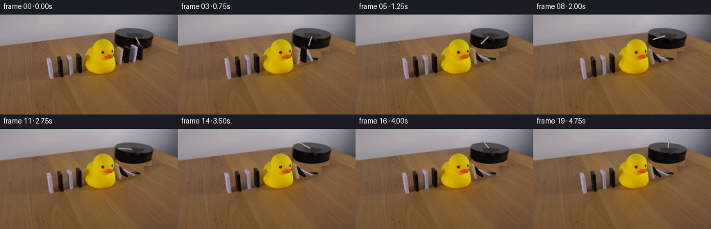
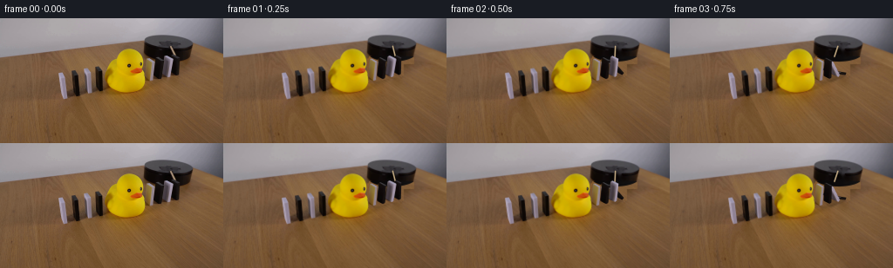
展开代码变化
--- 上一保存版本 +++ 本次保存版本 @@ -29,7 +29,7 @@ for b in blocks: for p in b['faces']: cv2.fillConvexPoly(mask,np.round(p*S).astype(np.int32),255) -mask=cv2.dilate(mask,cv2.getStructuringElement(cv2.MORPH_ELLIPSE,(9,9))) +mask=cv2.dilate(mask,cv2.getStructuringElement(cv2.MORPH_ELLIPSE,(21,21))) lowmask=cv2.resize(mask,(W,H),interpolation=cv2.INTER_AREA) # Remove the old contact shadows together with the domino silhouettes. shadow_mask=np.zeros((H,W),np.uint8) @@ -37,6 +37,8 @@ c=(b['D']+b['C'])/2 cv2.ellipse(shadow_mask,(int(c[0]+2),int(c[1]+1)),(6,3),-10,0,360,255,-1) lowmask=np.maximum(lowmask,cv2.GaussianBlur(shadow_mask,(5,5),.65)) +# The slender shaded far edge of the first domino must also be cleared. +cv2.fillConvexPoly(lowmask,np.array([(196,43),(206,47),(206,66),(201,68),(196,65)],np.int32),255) Y,X=np.mgrid[0:H,0:W].astype(np.float32) wood=cv2.remap(img,X+14,Y+34,cv2.INTER_LINEAR,borderMode=cv2.BORDER_REFLECT).astype(np.float32) @@ -56,6 +58,13 @@ under[:,:,0][inside]=shade[inside]+2 under[:,:,1][inside]=shade[inside]+.1 under[:,:,2][inside]=shade[inside]+.4 +# Feather the restored elliptical lower rim, with a coherent continuous contour. +platform_color=np.stack([shade+2,shade+.1,shade+.4],axis=-1) +coverage=np.clip(front-Y+.35,0,1)*(np.abs(nx)<=1)*(Y>=cy) +under=wood*(1-coverage[:,:,None])+platform_color*coverage[:,:,None] +# Restore a complete lower-rim strip instead of disconnected patches. +rim=(X>166)&(X<219)&(Y>43)&(Y<53) +lowmask[rim]=255 alpha=lowmask.astype(np.float32)/255 # Soft subpixel edges are handled at the same resolution as the original shot. clean=img.astype(np.float32)*(1-alpha[:,:,None])+under*alpha[:,:,None]
候选 03播放与检查图
点击播放 · 原生 RGB 像素
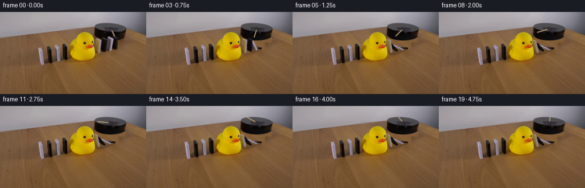
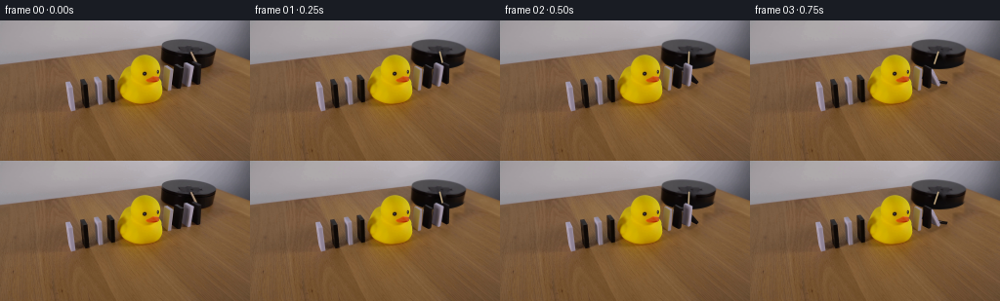
展开代码变化
--- 上一保存版本 +++ 本次保存版本 @@ -65,6 +65,7 @@ # Restore a complete lower-rim strip instead of disconnected patches. rim=(X>166)&(X<219)&(Y>43)&(Y<53) lowmask[rim]=255 +lowmask=np.maximum(lowmask,cv2.GaussianBlur(cv2.dilate(lowmask,np.ones((3,3),np.uint8)),(9,9),1.4)) alpha=lowmask.astype(np.float32)/255 # Soft subpixel edges are handled at the same resolution as the original shot. clean=img.astype(np.float32)*(1-alpha[:,:,None])+under*alpha[:,:,None] @@ -193,7 +194,13 @@ # The line terminates at the duck, which is not a rigid domino. dm=duckhi[:,:,None] canvas[:]=canvas*(1-dm)+source_hi*dm - return np.uint8(np.clip(cv2.resize(canvas,(W,H),interpolation=cv2.INTER_AREA),0,255)) + out=np.uint8(np.clip(cv2.resize(canvas,(W,H),interpolation=cv2.INTER_AREA),0,255)) + # Lock every region outside the little mechanical demonstration to the + # exact source photograph, including the rubber duck and left dominoes. + region=((X>=163)&(X<=222)&(Y>=19)&(Y<=83)).astype(np.float32) + region=cv2.GaussianBlur(region,(5,5),.6) + region[duckmask>0]=0 + return np.uint8(np.round(out*region[:,:,None]+img*(1-region[:,:,None]))) frames=[img] for n in range(1,20): frames.append(frame(n/4))
可观测工具轨迹
实际执行的命令与返回图片。
命令 1exit 0
/bin/bash -lc "ls -la && cat prompt.txt && printf '\\n---RULES---\\n' && cat GENERATION_RULES.md"
命令 2exit 0
/bin/bash -lc "cat artifact_io.py && python - <<'PY'
from PIL import Image
im=Image.open('first_frame.png'); im.resize((1024,576)).save('.tmp/enlarged.png')
PY"命令 3exit 0
/bin/bash -lc "python - <<'PY'
from PIL import Image,ImageDraw
im=Image.open('first_frame.png').resize((1280,720))
d=ImageDraw.Draw(im)
for x in range(160,211,5):
d.line((x*5,125,x*5,420),fill=(255,0,0,160),width=1);d.text((x*5,110),str(x),fill=(255,0,0))
for y in range(25,86,5):
d.line((795,y*5,1055,y*5),fill=(255,0,0,150),width=1);d.text((1056,y*5),str(y),fill=(255,0,0))
im.crop((780,100,1100,430)).save('.tmp/crop.png')
PY"命令 4exit 0
/bin/bash -lc "python - <<'PY'
from PIL import Image
im=Image.open('first_frame.png');im.crop((157,16,227,85)).resize((700,690)).save('.tmp/right.png')
PY"命令 5exit 0
/bin/bash -lc "python - <<'PY'
import importlib.util
for name in ['cv2','scipy','numpy','PIL']:
print(name, bool(importlib.util.find_spec(name)))
from PIL import Image
im=Image.open('first_frame.png'); im.crop((163,41,207,76)).resize((880,700),Image.Resampling.NEAREST).save('.tmp/tiles.png')
PY"命令 6exit 0
/bin/bash -lc "python - <<'PY'
from PIL import Image,ImageDraw
im=Image.open('first_frame.png').resize((1536,864),Image.Resampling.NEAREST)
d=ImageDraw.Draw(im)
for x in range(165,207,2):
d.line((x*6,240,x*6,444),fill=(200,40,40),width=1); d.text((x*6,230),str(x),fill='red')
for y in range(40,75,2):
d.line((984,y*6,1250,y*6),fill=(200,40,40),width=1);d.text((1250,y*6),str(y),fill='red')
im.crop((975,225,1275,452)).resize((900,681)).save('.tmp/grid.png')
PY"命令 7exit 0
/bin/bash -lc "python - <<'PY'
from PIL import Image,ImageDraw
im=Image.open('first_frame.png').crop((160,37,209,78)).resize((980,820),Image.Resampling.NEAREST);d=ImageDraw.Draw(im)
for x in range(160,209):
if x%2==0:
xx=(x-160)*20;d.line((xx,0,xx,820),fill=(220,50,50),width=1);d.text((xx+1,0),str(x),fill='red')
for y in range(38,78,2):
yy=(y-37)*20;d.line((0,yy,980,yy),fill=(220,50,50),width=1);d.text((0,yy+1),str(y),fill='red')
im.save('.tmp/biggrid.png')
PY"命令 8exit 0
/bin/bash -lc "python - <<'PY'
from PIL import Image
im=Image.open('first_frame.png')
for p in [(165,75),(175,77),(180,76),(191,73),(201,73),(176,105),(186,108),(195,111),(210,60),(220,60),(170,78),(193,50),(205,53),(211,50),(181,41)]: print(p,im.getpixel(p))
PY"命令 9exit 0
/bin/bash -lc "cat > generate.py <<'PY'
from pathlib import Path
import math
import cv2
import numpy as np
from PIL import Image, ImageDraw, ImageFilter
import artifact_io
ROOT=Path(__file__).resolve().parent
S=4
W,H=256,144
img=np.array(Image.open(ROOT/'first_frame.png').convert('RGB'))
# Geometry measured from the photographic setup. Faces retain their original finish.
# Ordered from the rubber duck to the rotating arm.
def arr(x): return np.array(x,dtype=np.float32)
blocks=[
dict(A=arr((167.6,47.8)), B=arr((173.7,50.9)), C=arr((172.8,71.8)), D=arr((166.7,69.6)), s=arr((2.0,-1.0)), white=True, height=25.2, stop=12.0, start=.88),
dict(A=arr((177.6,46.5)), B=arr((184.0,49.6)), C=arr((182.9,69.5)), D=arr((176.5,66.4)), s=arr((2.3,-1.0)), white=False, height=23.6, stop=33.0, start=.64),
dict(A=arr((188.4,44.7)), B=arr((195.6,47.8)), C=arr((193.2,67.5)), D=arr((186.0,64.4)), s=arr((2.0,-1.5)), white=True, height=25.0, stop=49.8, start=.43),
dict(A=arr((196.5,43.9)), B=arr((202.0,46.6)), C=arr((201.3,65.2)), D=arr((195.8,62.5)), s=arr((2.3,-1.2)), white=False, height=23.0, stop=64.0, start=.20),
]
for b in blocks:
A,B,C,D,s=[b[k] for k in ['A','B','C','D','s']]
b['faces']=[arr([A,B,C,D]),arr([B,B+s,C+s,C]),arr([A,A+s,B+s,B])]
# Remove only the parts that will move; synthesize the newly exposed wood from
# a nearby part of the same table, with its grain running in the same direction.
mask=np.zeros((H*S,W*S),np.uint8)
for b in blocks:
for p in b['faces']:
cv2.fillConvexPoly(mask,np.round(p*S).astype(np.int32),255)
mask=cv2.dilate(mask,cv2.getStructuringElement(cv2.MORPH_ELLIPSE,(9,9)))
lowmask=cv2.resize(mask,(W,H),interpolation=cv2.INTER_AREA)
# Remove the old contact shadows together with the domino silhouettes.
shadow_mask=np.zeros((H,W),np.uint8)
for b in blocks:
c=(b['D']+b['C'])/2
cv2.ellipse(shadow_mask,(int(c[0]+2),int(c[1]+1)),(6,3),-10,0,360,255,-1)
lowmask=np.maximum(lowmask,cv2.GaussianBlur(shadow_mask,(5,5),.65))
Y,X=np.mgrid[0:H,0:W].astype(np.float32)
wood=cv2.remap(img,X+14,Y+34,cv2.INTER_LINEAR,borderMode=cv2.BORDER_REFLECT).astype(np.float32)
# The local lighting has a slightly warmer tone near the duck.
wood[:,:,0]+=1.0;wood[:,:,1]-=1.;wood[:,:,2]-=2.
wood=np.clip(wood,0,255)
# Elliptical vertical side of the black rotating platform, revealed when the
# dominoes tip away. Match the black material to the visible stationary rim.
under=wood.copy()
cx,cy,rx,ry=193.0,29.15,27.05,9.5
nx=(X-cx)/rx
front=cy+11.0+ry*np.sqrt(np.maximum(0,1-nx*nx))
inside=(np.abs(nx)<=1)&(Y>=cy)&(Y<=front)
shade=8.0+4.5*(nx+.7)**2+1.2*(Y-cy)/20
# Preserve the grain-free platform's very subdued soft reflections.
under[:,:,0][inside]=shade[inside]+2
under[:,:,1][inside]=shade[inside]+.1
under[:,:,2][inside]=shade[inside]+.4
alpha=lowmask.astype(np.float32)/255
# Soft subpixel edges are handled at the same resolution as the original shot.
clean=img.astype(np.float32)*(1-alpha[:,:,None])+under*alpha[:,:,None]
# Small radial wooden stick is the only moving part of the platform.
armmask=np.zeros((H,W),np.uint8)
cv2.line(armmask,(195,32),(201,44),255,3,cv2.LINE_AA)
# Keep the removal below the upper surface of the central mounting hub.
armmask[:31]=0
clean_u8=np.uint8(np.clip(clean,0,255))
clean=cv2.inpaint(clean_u8,armmask,3,cv2.INPAINT_TELEA)
clean_hi=cv2.resize(clean,(W*S,H*S),interpolation=cv2.INTER_CUBIC).astype(np.float32)
source_hi=cv2.resize(img,(W*S,H*S),interpolation=cv2.INTER_CUBIC).astype(np.float32)
# Duck remains an obstacle: restore its photographic silhouette above any
# slightly overlapping rear domino edge. No movement of the left-hand row.
duckmask=np.zeros((H,W),np.uint8)
# Color-segment the visible yellow surface in this tightly bounded object area.
yellow=(img[:,:,0]>100)&(img[:,:,1]>90)&(img[:,:,2]<60)&(X>118)&(X<168)&(Y>32)&(Y<87)
num, lab, stat, cent=cv2.connectedComponentsWithStats(yellow.astype(np.uint8))
if num>1:
k=1+np.argmax(stat[1:,cv2.CC_STAT_AREA]);duckmask[lab==k]=255
# The beak and black eyes are restored inside the closed rubber silhouette.
contours,_=cv2.findContours(duckmask,cv2.RETR_EXTERNAL,cv2.CHAIN_APPROX_SIMPLE)
cv2.drawContours(duckmask,contours,-1,255,-1)
duckhi=cv2.resize(duckmask,(W*S,H*S),interpolation=cv2.INTER_CUBIC).astype(np.float32)/255
def composite_polygon(canvas,src_quad,dst_quad,lighting=1.0,add=0):
src_quad=np.float32(src_quad*S);dst_quad=np.float32(dst_quad*S)
matrix=cv2.getPerspectiveTransform(src_quad,dst_quad)
warped=cv2.warpPerspective(source_hi,matrix,(W*S,H*S),flags=cv2.INTER_CUBIC,borderMode=cv2.BORDER_REPLICATE)
m=np.zeros((H*S,W*S),np.uint8)
cv2.fillConvexPoly(m,np.round(dst_quad).astype(np.int32),255,cv2.LINE_AA)
ma=m[:,:,None].astype(np.float32)/255
canvas[:]=canvas*(1-ma)+np.clip(warped*lighting+add,0,255)*ma
def corners(b,theta):
th=math.radians(theta);c,sn=math.cos(th),math.sin(th)
D=b['D'];C=b['C'];v=b['A']-D
v=v*c+np.array([-b['height']*sn,b['height']*.255*sn])
side=b['s']*c+np.array([.0,-2.1*sn])
A=D+v;B=C+v
return [np.array([A,B,C,D]), np.array([B,B+side,C+side,C]),np.array([A,A+side,B+side,B])]
def angle(b,t):
elapsed=t-b['start']
if elapsed<=0:return 0.0
# The knock gives each free tile a growing angular velocity; the duck arrests
# the train, with one short, damped rebound of the supported tiles.
duration=.46 if b['white'] else .43
u=min(1,elapsed/duration)
th=b['stop']*u*u
if elapsed>duration:
z=elapsed-duration
th=b['stop']-2.5*math.exp(-z*9)*math.sin(z*20)
return max(0,th)
def draw_arm(canvas,t):
theta=math.radians(70+43.0*t)
center=np.array([193.6,29.3])
v=np.array([23*math.cos(theta),15*math.sin(theta)])
a=center+v*.18;b=center+v
# On the far side, the free end is hidden behind the stationary platform.
# Wood is cylindrical, with a narrow pale highlight and softly shaded underside.
sh=np.uint8(np.clip(canvas,0,255))
aa=tuple(np.round((a+np.array([0,.4]))*S).astype(int));bb=tuple(np.round((b+np.array([0,.4]))*S).astype(int))
cv2.line(sh,aa,bb,(103,85,62),int(1.55*S),cv2.LINE_AA)
cv2.line(sh,tuple(np.round(a*S).astype(int)),tuple(np.round(b*S).astype(int)),(185,161,123),int(1.2*S),cv2.LINE_AA)
cv2.line(sh,tuple(np.round((a+[-.16,-.25])*S).astype(int)),tuple(np.round((b+[-.16,-.25])*S).astype(int)),(211,189,153),max(1,int(.45*S)),cv2.LINE_AA)
canvas[:]=sh
# Central mounting plate remains above the rotating stick.
hub=np.zeros((H*S,W*S),np.uint8)
cv2.fillConvexPoly(hub,np.round(np.array([(190.8,27.6),(195.7,27.6),(196.2,31.0),(191.6,31.2)])*S).astype(int),255,cv2.LINE_AA)
hm=hub[:,:,None]/255
canvas[:]=canvas*(1-hm)+source_hi*hm
def frame(t):
canvas=clean_hi.copy()
angles=[angle(b,t) for b in blocks]
# Shadows are attached to the moving tiles rather than baked into the table.
shadows=np.zeros((H*S,W*S),np.uint8)
for b,th in zip(blocks,angles):
fs=corners(b,th);p=fs[0]
# Project each vertical point onto the tabletop with a modest lamp offset.
top=p[:2]+np.array([3,2])
base=p[2:]+np.array([1,1])
poly=np.vstack([top,base])
# At rest the original shadow is a small contact patch. Tilting increases
# the footprint continuously, avoiding shadows floating above the wood.
D,C=b['D'],b['C']
reach=np.array([-b['height']*math.sin(math.radians(th)),b['height']*.255*math.sin(math.radians(th))])
shadowp=np.array([D+[.4,1.0],C+[1.3,1.3],C+reach+[4,3],D+reach+[4,3]])
cv2.fillConvexPoly(shadows,np.round(shadowp*S).astype(int),80,cv2.LINE_AA)
shadows=cv2.GaussianBlur(shadows,(13,13),2.5)
sh=shadows[:,:,None].astype(np.float32)/255
canvas[:]*=(1-sh*.50)
draw_arm(canvas,t)
# Farther right dominoes are farther from the camera. Render them first so
# leaning boards make the correct overlapping stack against the rubber duck.
for i in [3,2,1,0]:
b=blocks[i];th=angles[i];fs=corners(b,th)
if th<.001:
# The stationary texture is copied exactly through the original face mask.
m=np.zeros((H*S,W*S),np.uint8)
for face in b['faces']:cv2.fillConvexPoly(m,np.round(face*S).astype(int),255,cv2.LINE_AA)
m=cv2.dilate(m,np.ones((3,3),np.uint8))
ma=m[:,:,None].astype(np.float32)/255
canvas[:]=canvas*(1-ma)+source_hi*ma
else:
# Upper face, narrow end, broad plane. The broad plane turns toward the
# overhead soft light, and retains the real original surface texture.
lam=math.sin(math.radians(th))
for j in [2,1,0]:
light=1.0
add=0.
if j==0:
light=1+.12*lam if b['white'] else 1+.18*lam
add=2.0*lam if b['white'] else 9*lam
elif j==1:light=1-.10*lam
else:light=1-.15*lam
composite_polygon(canvas,b['faces'][j],fs[j],light,add)
# The line terminates at the duck, which is not a rigid domino.
dm=duckhi[:,:,None]
canvas[:]=canvas*(1-dm)+source_hi*dm
return np.uint8(np.clip(cv2.resize(canvas,(W,H),interpolation=cv2.INTER_AREA),0,255))
frames=[img]
for n in range(1,20): frames.append(frame(n/4))
artifact_io.save(np.stack(frames),ROOT)
Image.fromarray(clean).save(ROOT/'.tmp/clean.png')
PY
python generate.py"命令 10exit 0
/bin/bash -lc "python - <<'PY'
from PIL import Image
for i in [0,1,2,3,4,5,8]:
im=Image.open(f'frames/{i:02d}.png');im.crop((158,20,225,80)).resize((670,600)).save(f'.tmp/fr{i}.png')
PY"命令 11exit 0
/bin/bash -lc "python - <<'PY'
from PIL import Image
Image.open('.tmp/clean.png').crop((162,28,214,74)).resize((780,690)).save('.tmp/clean_crop.png')
PY"命令 12exit 0
/bin/bash -lc "python - <<'PY'
p='generate.py'
s=open(p).read().replace(\"mask=cv2.dilate(mask,cv2.getStructuringElement(cv2.MORPH_ELLIPSE,(9,9)))\", \"mask=cv2.dilate(mask,cv2.getStructuringElement(cv2.MORPH_ELLIPSE,(21,21)))\")
s=s.replace(\"lowmask=np.maximum(lowmask,cv2.GaussianBlur(shadow_mask,(5,5),.65))\", \"lowmask=np.maximum(lowmask,cv2.GaussianBlur(shadow_mask,(5,5),.65))\\n# The slender shaded far edge of the first domino must also be cleared.\\ncv2.fillConvexPoly(lowmask,np.array([(196,43),(206,47),(206,66),(201,68),(196,65)],np.int32),255)\")
s=s.replace(\"inside=(np.abs(nx)<=1)&(Y>=cy)&(Y<=front)\", \"inside=(np.abs(nx)<=1)&(Y>=cy)&(Y<=front)\")
s=s.replace(\"alpha=lowmask.astype(np.float32)/255\", \"# Feather the restored elliptical lower rim, with a coherent continuous contour.\\nplatform_color=np.stack([shade+2,shade+.1,shade+.4],axis=-1)\\ncoverage=np.clip(front-Y+.35,0,1)*(np.abs(nx)<=1)*(Y>=cy)\\nunder=wood*(1-coverage[:,:,None])+platform_color*coverage[:,:,None]\\n# Restore a complete lower-rim strip instead of disconnected patches.\\nrim=(X>166)&(X<219)&(Y>43)&(Y<53)\\nlowmask[rim]=255\\nalpha=lowmask.astype(np.float32)/255\")
open(p,'w').write(s)
PY
python generate.py
python - <<'PY'
from PIL import Image
Image.open('frames/05.png').crop((158,20,225,80)).resize((670,600)).save('.tmp/fr5b.png')
PY"命令 13exit 0
/bin/bash -lc "python - <<'PY'
p='generate.py';s=open(p).read();s=s.replace(\"alpha=lowmask.astype(np.float32)/255\", \"lowmask=np.maximum(lowmask,cv2.GaussianBlur(cv2.dilate(lowmask,np.ones((3,3),np.uint8)),(9,9),1.4))\\nalpha=lowmask.astype(np.float32)/255\")
s=s.replace(\"return np.uint8(np.clip(cv2.resize(canvas,(W,H),interpolation=cv2.INTER_AREA),0,255))\", \"out=np.uint8(np.clip(cv2.resize(canvas,(W,H),interpolation=cv2.INTER_AREA),0,255))\\n # Lock every region outside the little mechanical demonstration to the\\n # exact source photograph, including the rubber duck and left dominoes.\\n region=((X>=163)&(X<=222)&(Y>=19)&(Y<=83)).astype(np.float32)\\n region=cv2.GaussianBlur(region,(5,5),.6)\\n region[duckmask>0]=0\\n return np.uint8(np.round(out*region[:,:,None]+img*(1-region[:,:,None])))\")
open(p,'w').write(s)
PY
python generate.py
python - <<'PY'
from PIL import Image
Image.open('frames/05.png').crop((158,20,225,80)).resize((670,600)).save('.tmp/fr5c.png')
PY"命令 14exit 0
/bin/bash -lc "python - <<'PY'
import numpy as np
from PIL import Image
p=np.load('pixels.npz')['pixels']
assert p.shape == (144,256,20)
f=np.asarray(Image.open('frames/00.png'))
assert np.array_equal(f,np.asarray(Image.open('first_frame.png')))
print('Validated: 20 RGB frames, 256Ã144, 4 fps. Frame 00 is identical to source.')
PY"视觉工具实际返回图片 1
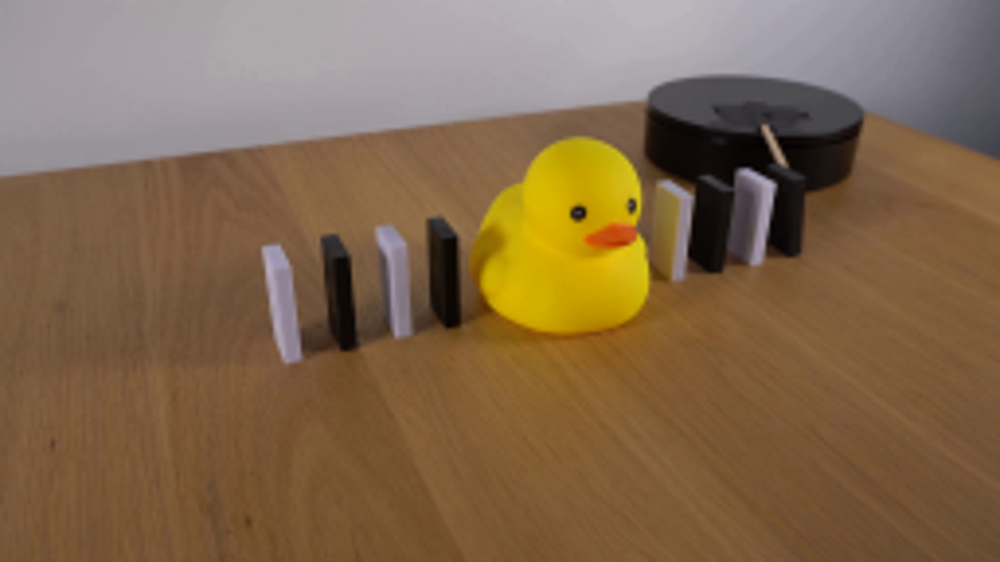
视觉工具实际返回图片 2
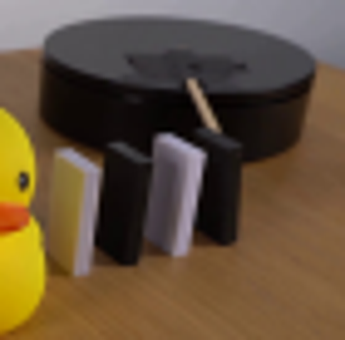
视觉工具实际返回图片 3
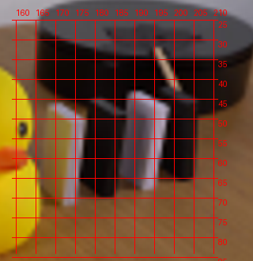
视觉工具实际返回图片 4
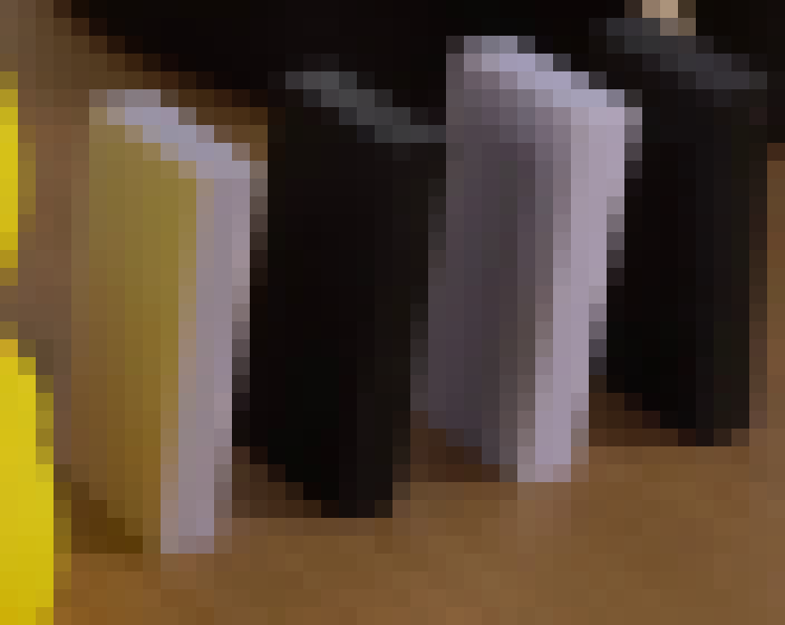
视觉工具实际返回图片 5
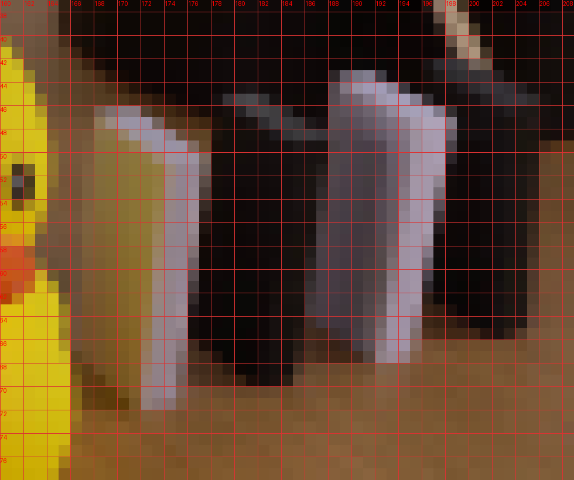
视觉工具实际返回图片 6
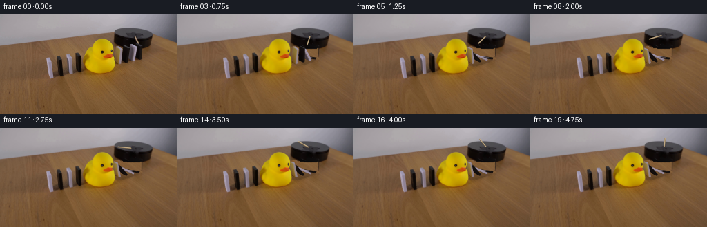
视觉工具实际返回图片 7
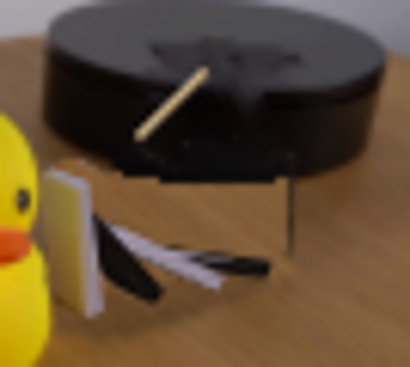
视觉工具实际返回图片 8
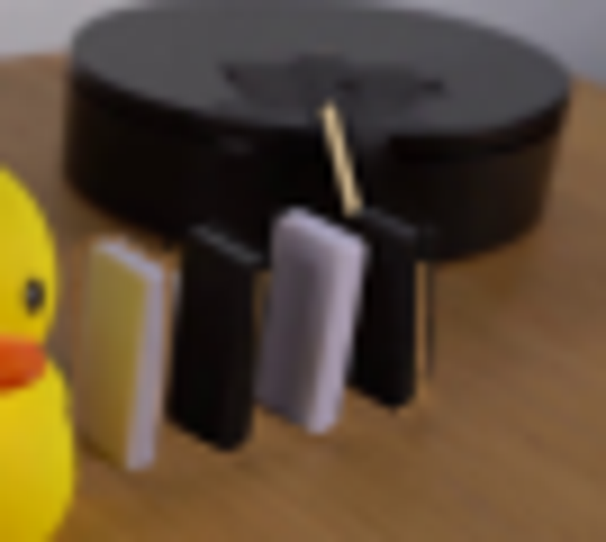
视觉工具实际返回图片 9
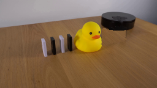
视觉工具实际返回图片 10
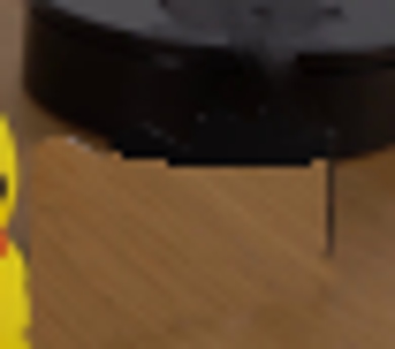
视觉工具实际返回图片 11
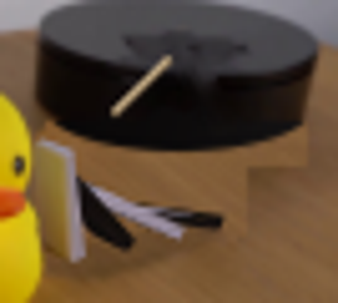
视觉工具实际返回图片 12
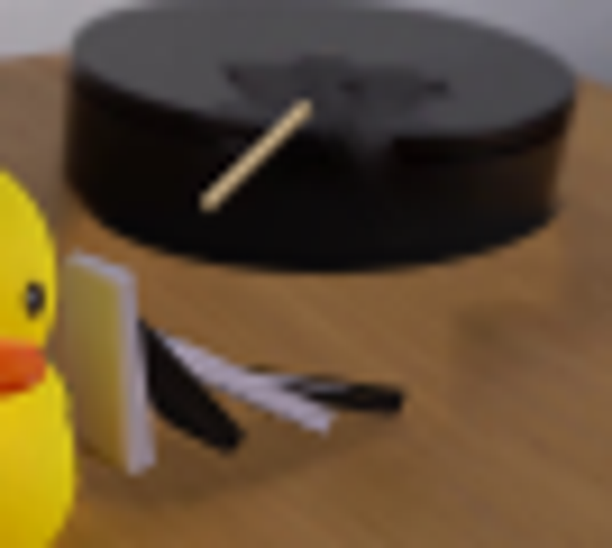
视觉工具实际返回图片 13

保存候选 3 份；完成命令 14 次；可验证图片返回 13 张。原始 API 响应与完整日志保留在本地。